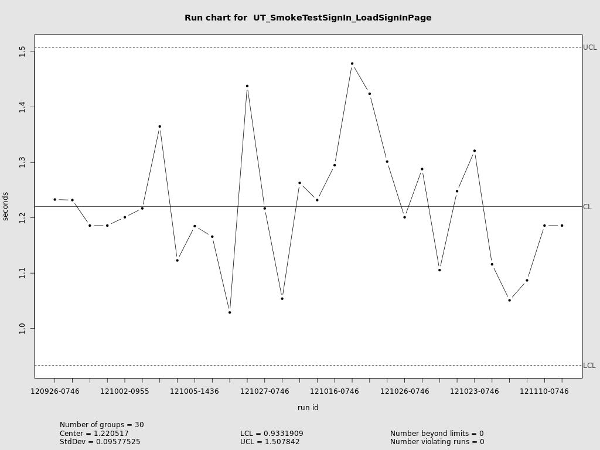
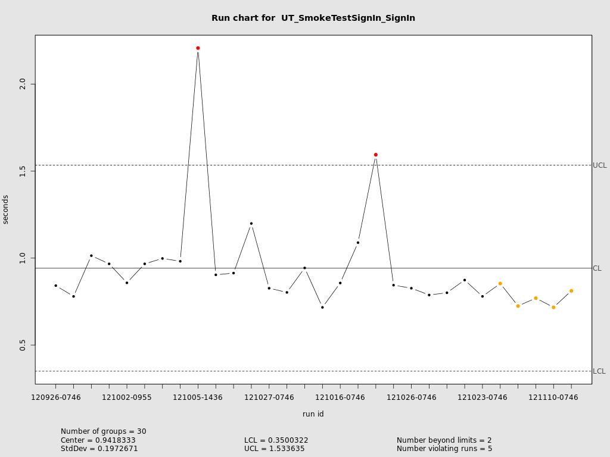

breaking systems for fun and profit since 2000
What percentage of your customers do you care about?
50%
95%
99%
?
# total number of GETs to /myservice for a given day
grep -c "GET /myservice" /all/my/logs/app*/access.log.2012-11-16
# total number of GETs to /myservice at peak hour
grep -c "2012-11-11 17:.*GET /myservice" /all/my/logs/app*/access.log.2012-11-16
# processing times recorded by server in access log
grep "GET /myservice" /all/my/logs/app*/access.log.2012-11-16 | \
cut -d\" -f6 | sort -nr > service.access_times.2012-11-16
what about network latency and bandwidth?
does request fit in the client's resource budget? 50/95/99%?
all models are wrong; some models are useful
model +/- 20%
adjust for
Gatling is an Open Source Stress Tool with:
gatling-tool.org
detect changes in trend with control charts
is process changing?
is process changing?
the needs of the many outweigh the needs of the few or the one
a dead site is no good to anyone
know the site's limits and stay within them
implement a series of circuit breakers that can be tripped to reduce load in a managed way
Example services ranked by criticality
there's usually a trade-off available
Resources